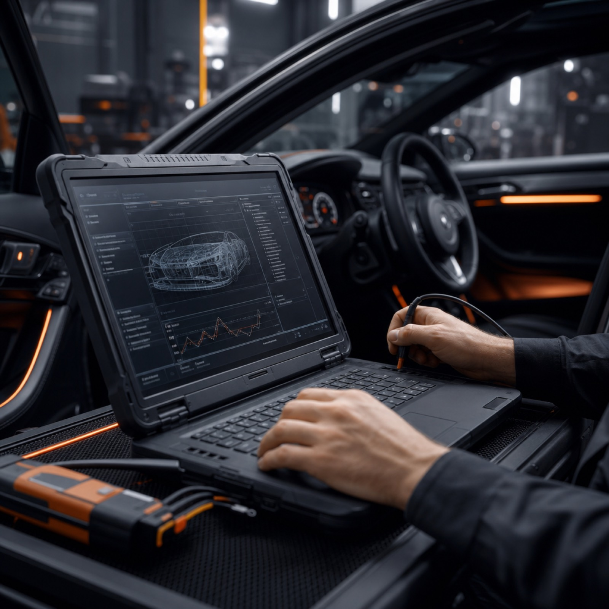

Wycena przed startem
Wycenę naprawy dostajesz przed jej rozpoczęciem, a nie po fakcie — bez niespodzianek na końcowej fakturze.
Mechanika, diagnostyka i naprawy bieżące — solidny warsztat samochodowy w Rzeszowie, na którym możesz polegać.
Zostaw podstawowe dane, a oddzwonimy i ustalimy dogodny termin przyjęcia auta do warsztatu.
Serwis Podkarpacki działa w Rzeszowie od 2011 roku. Przez ten czas przez nasz warsztat przewinęło się ponad 12 000 napraw i przeglądów — od zwykłej wymiany oleju po skomplikowaną diagnostykę usterek elektroniki.
Pracujemy na sprzęcie diagnostycznym klasy warsztatów autoryzowanych i regularnie aktualizujemy oprogramowanie testerów, żeby obsługiwać nowe modele aut bez wysyłania klienta do ASO.

Obsługujemy codzienne naprawy, diagnostykę i serwis sezonowy. Pełny opis zakresu, cen i czasu realizacji znajdziesz na podstronie Usługi.
Wycenę naprawy dostajesz przed jej rozpoczęciem, a nie po fakcie — bez niespodzianek na końcowej fakturze.
Stawiamy na części o jakości minimum OE lub markowe zamienniki, a nie najtańsze rozwiązania dostępne od ręki.
Ustalamy termin przyjęcia i odbioru, a jeśli coś się zmienia — informujemy telefonicznie, zanim czas minie.
Po odbiorze auta wiesz, co zostało zrobione, jakie części zastosowano i jaka gwarancja obejmuje wykonaną usługę.
Od pierwszego kontaktu po odbiór auta prowadzimy naprawę w uporządkowany sposób — z diagnozą, wyceną i jasną komunikacją.
Dzwonisz, piszesz przez formularz lub umawiasz się na miejscu, opisując usterkę albo zakres przeglądu.
Mechanik sprawdza auto, w razie potrzeby podpina diagnostykę komputerową i przedstawia wycenę przed rozpoczęciem naprawy.
Pracujemy zgodnie z ustalonym zakresem i terminem, a o wszelkich dodatkowych usterkach informujemy przed ich usunięciem.
Dostajesz jasne podsumowanie wykonanych prac, użytych części oraz informacji o gwarancji.
Jeśli zależy Ci na uczciwej wycenie, terminowej realizacji i spokojnym kontakcie bez domysłów, skontaktuj się z nami lub zostaw zgłoszenie. Odpowiemy i ustalimy najbliższy możliwy termin.
ul. Przemysłowa 22, 35-105 Rzeszów · Pokaż na mapie
W sezonie wymiana opon idzie u nas osobnym torem: dedykowane stanowisko i osobny kalendarz, żeby nie blokować napraw i żeby Ty nie czekał, aż zwolni się podnośnik. Zgłoszenie zajmuje minutę — oddzwaniamy z potwierdzeniem terminu.
Czas zależy głównie od jednej rzeczy: czy opony są już na osobnych felgach.
Możesz zostawić zdjęte opony u nas — leżą w suchym, zaciemnionym pomieszczeniu, oznaczone Twoim nazwiskiem i numerem rejestracyjnym. Na kolejny sezon wystarczy zadzwonić: wyciągamy komplet, zanim przyjedziesz.
Oddzwonimy w godzinach pracy warsztatu i potwierdzimy konkretną godzinę. Do zobaczenia.
Podpowiedzi są orientacyjne — przyczynę ustalamy dopiero po obejrzeniu auta. Ceny potwierdzamy przed rozpoczęciem pracy.